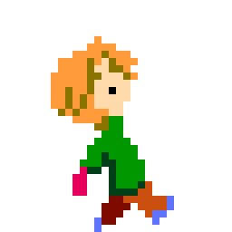
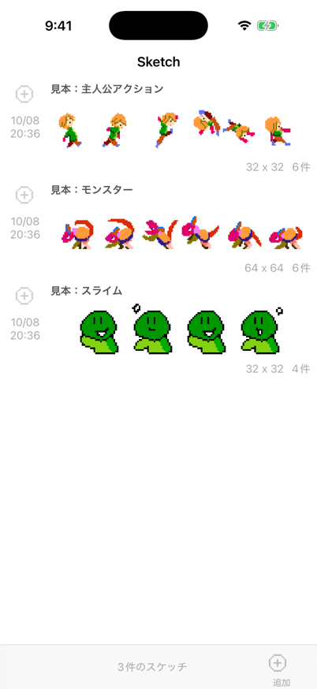
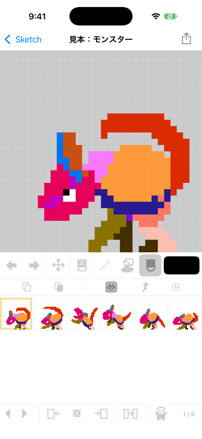
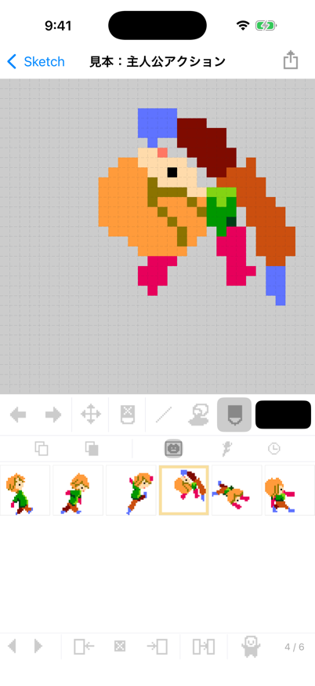
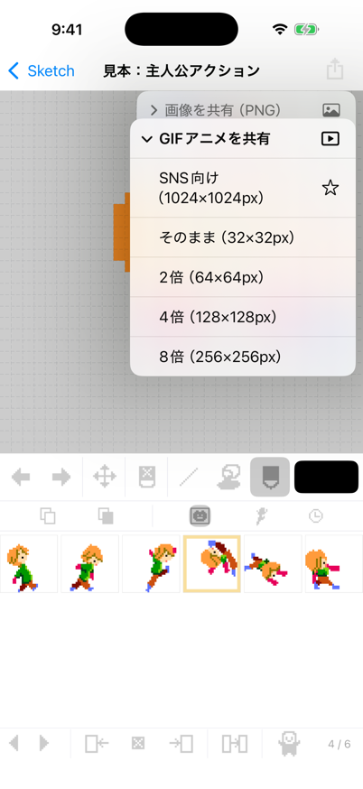

できること
- マス目に、指でドット絵ペン・塗りつぶし・直線・消しゴムで描けます。2 本の指で広げると拡大できます。
- パラパラ漫画のようなアニメーションフレームを重ねて、動くドット絵が作れます。
- PNG・GIF アニメで共有メッセージや SNS など、画像を送れるアプリへそのまま共有できます。SNS 向けに、ドットをくっきり保ったまま大きく書き出せます。
- ほかのアプリから取り込み写真アプリなどの画像や GIF アニメを、共有から取り込めます。
Dot Kaku
Draw pixel art and animated GIFs with your finger
A pixel art and animation app for iPhone. The interface is in Japanese.
Features
- Pixel art on a gridDraw with pen, fill, line and eraser. Pinch to zoom in.
- Flip-book animationsStack frames to make animated pixel art.
- Share as PNG or animated GIFSend to messaging and social apps. The "SNS" size scales your art up while keeping every pixel crisp.
- Import from other appsShare images and animated GIFs from Photos and other apps to Dot Kaku.